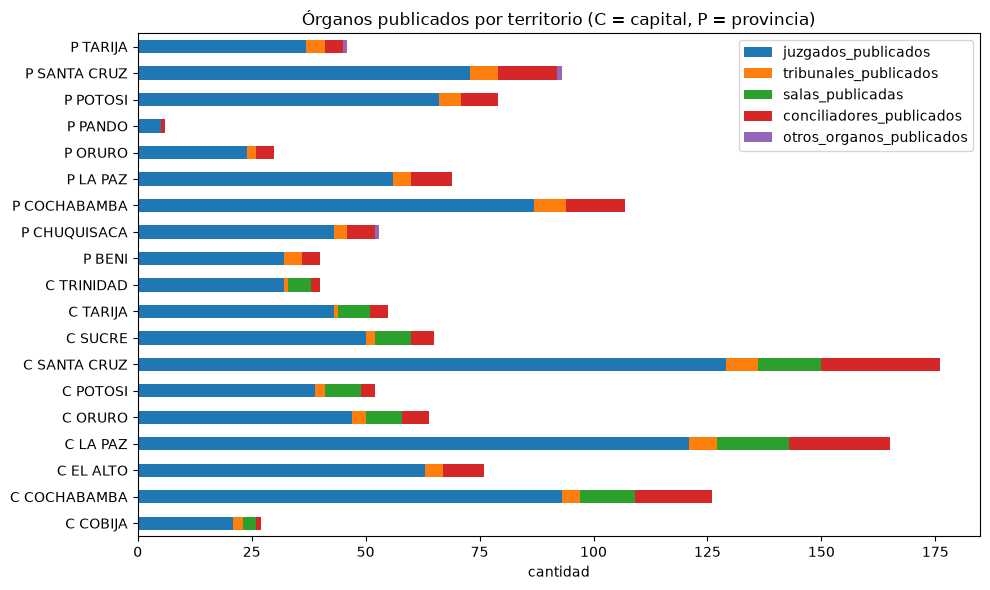

Cómo se hizo · 09
La capa analítica
Doce tablas correctas no alcanzan: para analizar hay que cruzarlas, y cruzar mal multiplica los números sin avisar. El notebook 08 organiza todo en cinco tablas relacionadas que se pueden usar sin ese riesgo.
El problema: el fan-out
Unir dos tablas es como el BUSCARV de Excel: para cada fila de la tabla A se buscan las filas de la tabla B con la misma clave. Si a una fila de A le corresponden 15 de B, la fila de A aparece 15 veces en el resultado. Si después se suma una columna de A, da 15 veces el valor real. Eso es el fan-out, y el síntoma es siempre el mismo: después de unir, una suma cambió.
Las doce tablas no comparten grano: las de procesos son hechos por territorio y tipo de proceso; las cuatro largas agregan una dimensión de métrica; movimiento y gestión son agregados por materia; juzgados y personal son recursos a un nivel geográfico más grueso. Se simularon las uniones posibles sin guardarlas, solo para medirlas:
| Unión simulada | Filas antes | Después | Factor |
|---|---|---|---|
| movimiento ↔ causas por proceso | 44 | 2.047 | ×46,5 |
| movimiento ↔ resueltas | 44 | 23.511 | ×534 |
| movimiento ↔ apelaciones | 44 | 32.696 | ×743 |
| movimiento ↔ ejecución | 44 | 8.618 | ×196 |
| movimiento ↔ otros trámites | 44 | 4.825 | ×110 |
| causas ↔ resueltas | 1.997 | 25.516 | ×12,8 |
| resueltas ↔ apelaciones | 23.403 | 349.161 | ×14,9 |
| causas ↔ juzgados en crudo | 2.027 | 116.169 | ×57,3 |
| causas de provincia ↔ personal 14.1.1 | 927 | 4.635 | ×5 |
El efecto sobre las cifras: en el cruce movimiento ↔ causas, atendidas pasa de 1.477.682 a 80.966.966; en causas ↔ juzgados, de 710.393 a 41.387.542. Un informe hecho así sería absurdo, pero nada lo delataría: las filas simplemente se ven repetidas.
Una relación 1:N se representa con dos tablas relacionadas, no copiando el lado N dentro de la base. El notebook 08 no usa drop_duplicates para esconder repeticiones, no rellena vacíos y rechaza con error cualquier tabla auxiliar cuya clave no sea única antes de unir.
Cardinalidad, en simple
| Relación | Significa | Unir es… |
|---|---|---|
| 1:1 | a cada fila de A le corresponde una de B | seguro |
| N:1 | muchas filas de A comparten una de B (muchos procesos, un departamento) | seguro si la clave de B es única: A no crece |
| 1:N | a cada fila de A le corresponden varias de B | A crece: fan-out |
| N:M | varias con varias | explota |
Clave técnica y clave semántica
| Tipo | Cuál es | Para qué sirve |
|---|---|---|
| Técnica | cuadro_origen + pagina_pdf + orden_fila (+ columna en las largas) | volver al PDF y verificar a mano |
| Semántica | ambito + territorio + materia_homologada + tipo_proceso + etapa_proceso_fuente + contexto_accion_penal | identificar qué representa la fila |
La técnica no sustituye a la semántica: usar orden_fila para desempatar filas repetidas es esconder que no se entendió el dato, que es exactamente lo que la auditoría 5 se negó a hacer.
El estudio previo: grano, claves y tiempo de cada tabla
Antes de unir nada se midió cada tabla (auditoria/auditoria_uniones_internas.csv). La clave técnica candidata de cada una, comprobada sobre los datos:
| Tabla | Clave técnica | Combinaciones | Filas con vacíos en la clave |
|---|---|---|---|
causas_movimiento | cuadro_origen + etiqueta_fila | 78 | 0 |
causas_por_gestion | cuadro_origen + etiqueta_fila + gestion | 235 | 0 |
causas_serie_historica | cuadro_origen + gestion | 51 | 0 |
juzgados | cuadro_origen + fila_en_cuadro + columna | 1.148 | 0 |
personal | cuadro_origen + distrito + ente | 85 | 22 |
personal_jurisdiccional | personal | 3 | 0 |
autoridad_sumariante | cuadro_origen + etiqueta_fila | 27 | 0 |
causas_por_tipo_proceso | cuadro_origen + pagina_pdf + orden_fila | 2.419 | 0 |
| las cuatro largas | cuadro_origen + pagina_pdf + orden_fila + orden_columna | todas únicas | 0 |
Los 22 vacíos de personal son estructurales: unos cuadros publican por ente sin distrito y otros por distrito sin ente. La combinación es única, pero no sirve como clave para unir.
En cuanto al tiempo: causas_por_gestion cubre 2019–2023 y causas_serie_historica 2007–2023; el resto es 2023. ejecucion_por_tipo_proceso no tiene columna de gestión porque el cuadro no la imprime, y no se inventó. La columna de población de los cuadros de juzgados refiere a una proyección 2022. Una futura dimensión de tiempo debe distinguir año de observación, edición del Anuario y año de referencia de las variables auxiliares.
Relaciones que resultaron seguras (1:1 con filtros explícitos): movimiento por materia ↔ gestión 2023 en las 32 claves emparejadas; totales de movimiento 2023 ↔ serie histórica 2023 por ámbito; totales de gestión 2019–2023 ↔ serie histórica por ámbito y año (15 de 15).
La arquitectura
dataset_analitico_interno (1.997 filas, 87 columnas) ← LA BASE
│
├── 1:N lógica, NO se une ─────→ metricas_tipo_proceso_long (81.907)
├── N:1 por ambito + territorio → recursos_judiciales_geografia (19)
└── N:1 por departamento ───────→ personal_geografia (9)
movimiento_gestion_2023 (56) ← hecho agregado, aparte
El papel de cada una de las doce tablas
| Tabla | Rol | ¿Se une a la base? |
|---|---|---|
causas_por_tipo_proceso | base analítica | es la base |
juzgados | enriquecimiento N:1 | sí, después de prepararla en 19 claves |
personal | enriquecimiento N:1 | sí, solo las 9 filas del 14.1.3 |
causas_movimiento, causas_por_gestion | hecho auxiliar | no; se cruzan entre sí en movimiento_gestion_2023 |
| las cuatro largas | hecho auxiliar | no; se apilan en metricas_tipo_proceso_long |
causas_serie_historica | control histórico | no |
personal_jurisdiccional | recurso auxiliar | no |
autoridad_sumariante | no necesaria | no |
La tabla base: dataset_analitico_interno
Son las filas de causas_por_tipo_proceso que cumplen las tres condiciones:
tipo_fila_derivado == "detalle": no es una fila de total;es_total_nacional == False: no es la página de total nacional;tipo_procesono está vacío.
Resultado: 1.997 filas, 1.070 de capitales y El Alto y 927 de provincias. Como excluye los totales, no hay doble conteo posible al sumar. Conserva las 65 columnas de la fuente y agrega 22: territorio, tipo_elemento_analitico y los recursos y el personal del territorio.
territorio
La ciudad para las filas de capital, el distrito judicial para las de provincia, normalizada. Es la clave geográfica comparable: La Paz ciudad, El Alto y el distrito La Paz son tres territorios distintos.
tipo_elemento_analitico
No todas las filas son procesos. Esta columna, que existe solo en la capa analítica, las separa usando las auditorías:
| Valor | Filas | Qué es |
|---|---|---|
proceso | 1.655 | un tipo de proceso real, comparable con otros |
accion_penal | 171 | una acción penal (pública, a instancia de parte, privada) |
otro_detalle | 171 | encabezados padre penales (penal común, anticorrupción, violencia) que la fuente conserva como fila |
Ninguna se eliminó; el EDA trabaja sobre las 1.655 filas proceso.
La clave semántica es única en las 1.997 filas, sin vacíos. Las sumas se conservan exactas antes y después de las uniones:
| Columna | Antes | Después |
|---|---|---|
nuevas_ingresadas | 378.684 | 378.684 |
atendidas | 706.485 | 706.485 |
resueltas | 212.499 | 212.499 |
pendientes_fin | 311.478 | 311.478 |
pendientes_inicio | 252.037 | 252.037 |
Además el notebook compara fila por fila las 65 columnas de origen y calcula la huella SHA-256 de los 24 archivos originales antes y después: si alguno cambió, falla.
Las tablas auxiliares
recursos_judiciales_geografia (19 filas)
Los órganos publicados por territorio: 10 capitales y 9 provincias.
- Capitales: se suman solo las hojas de la jerarquía de 4.1.1, por tipo de entidad. Los subtotales y el total general no entran. El resultado se compara contra el total general publicado de cada ciudad.
- Provincias: se toma la fila TOTALES de cada cuadro 4.1.2–4.1.10, después de comprobar que sus 119 combinaciones de cuadro y columna reproducen exactamente la suma de localidades. Población y total no se cuentan como órganos.
Los componentes quedan separados: juzgados_publicados, tribunales_publicados, salas_publicadas, conciliadores_publicados, otros_organos_publicados. No se suman en una variable final: no existe numero_juzgados_real. La columna indeterminada de Tarija conserva su total publicado (4) aparte y marca clasificacion_recursos_completa = False para Tarija provincia.

personal_geografia (9 filas)
Las nueve filas por distrito del cuadro 14.1.3. No suma 14.1.1 ni 14.1.2, que se solapan con él. Se une a la base como atributo del distrito: el personal no se reparte entre materias ni procesos, porque el Anuario no lo publica así.
metricas_tipo_proceso_long (81.907 filas)
Las cuatro tablas largas apiladas una debajo de otra, con familia_metrica (resueltas 27.993, apelaciones 37.871, ejecución 10.015, otros trámites 6.028) y territorio. Sin uniones ni pivotes. Su clave familia_metrica + cuadro_origen + pagina_pdf + orden_fila + columna es única.
Se midió su relación con la base: 1.712 de las 1.997 claves tienen métricas (85,7 %), 285 no tienen y 586 claves de métricas no tienen fila en la base. Una unión plana daría 59.540 filas, factor 29,8. Por eso la relación se documenta y no se guarda.
movimiento_gestion_2023 (56 filas)
Une movimiento y gestión 2023 por ambito + materia_homologada + gestion, conservando las filas sin pareja (unión externa): 32 con pareja, 12 solo en movimiento y 12 solo en gestión. Las 24 sin pareja son las materias Anticorrupción/Violencia que la auditoría 2 dejó separadas.
Las uniones que se hicieron y las que no
| Origen | Destino | Clave | Tipo | Filas |
|---|---|---|---|---|
| base | recursos | ambito + territorio | N:1 | 1.997 → 1.997 |
| base | personal 14.1.3 | departamento_derivado | N:1 | 1.997 → 1.997 |
| movimiento | gestión 2023 | ambito + materia_homologada + gestion | 1:1 externa | 44 + 44 → 56 |
Rechazadas a propósito:
- unir la base con las 81.907 métricas;
- repetir movimiento y gestión dentro de cada tipo de proceso;
- cruzar juzgados por materia o repartir órganos mixtos;
- cruzar las 85 filas de personal, que tienen disposiciones solapadas;
- unir personal jurisdiccional, autoridad sumariante o la serie histórica a la base;
- cualquier relación N:M guardada.
El diccionario analítico y el leakage
Leakage (fuga de información)
Usar como variable explicativa algo que es, o se deriva de, el resultado que se quiere explicar. El modelo parece perfecto y no sirve para nada, porque en la realidad esa variable no se conoce antes del resultado.
La duración estimada se calcula con pendientes_fin ÷ resueltas. Un modelo que predice la duración usando resueltas «acierta» siempre: se le está dando la respuesta.
diccionario_analitico.csv describe las 192 columnas de las cinco tablas con su rol (trazabilidad, resultado, recurso, geografía, proceso, materia, identificador, no usar como predictor) y marca 47 columnas con riesgo_leakage = True: los conteos de movimiento, resolución y pendencia, las celdas de métricas, y pct_resueltas, pct_pendientes y promedio_por_juzgado, que son transformaciones directas de resultados.
num_juzgadosynum_juzgados_paginaestán marcados «no usar como predictor»: son conteos nominales, no una medida física.- Las remuneraciones sirven como recurso para explicar la celeridad, pero no para predecir un costo por caso construido con esas mismas remuneraciones.
El diccionario completo está en el diccionario.